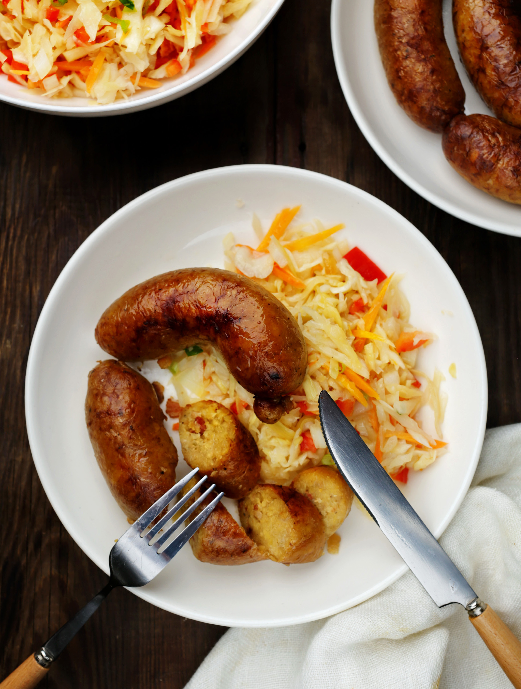

Эти картофельные колбаски — популярное блюдо не только в Литве, но и в Беларуси. Название пошло от литовского слова «желудок, черева» (ведарай), хотя для русского уха воспринимается, скорее, как «ведать рай» — и это прекрасно описывает аппетитнейший вкус колбасок. Натуральную оболочку начиняют измельчённым картофелем с обжаренным луком и салом или беконом, а затем жарят или запекают. Подготовить картофель для этого блюда можно разными способами: нарезать небольшими кубиками, натереть на тёрке, измельчить в мясорубке или кухонном комбайне. Выбор зависит от желаемой текстуры начинки и ваших технических возможностей. Удобна здесь мясорубка со специальной решёткой и насадкой для колбасок. Можно просто использовать насадку, но начинять вручную, это несложно и занимает немного времени. А если нет насадки, то подойдёт срезанное горлышко пластиковой бутылки или воронка с широким горлышком (2,5–3,5 см). Оболочку для колбас несложно найти в магазинах, на рынке или заказать онлайн, обычно она продаётся уже подготовленная, высушенная и в соли. Перед началом приготовления нужно замочить её в тёплой воде и промыть снаружи и внутри. Чтобы расправилась, можно надеть оболочку на насадку и пропустить сквозь неё воду из крана. В начинку добавляют обжаренный лук и сало, нотку дымка придаст сырокопчёный бекон, но можно взять и просто щепотку копчёной паприки или копчёной соли. Для сочности и нежности начинки картошку отжимают от жидкости и добавляют молоко. Хотя можно оставить как есть и молоко не добавлять, достаточно сала. Подают ведарай обычно со сметаной, шкварками с луком, хорошо дополнить их зелёным салатом, свежими овощами или квашеной капустой. Вкусны картофельные колбаски в горячем и в холодном виде. Они хранятся в холодильнике сутки. Остывшие можно подогреть или обжарить на сковородке.